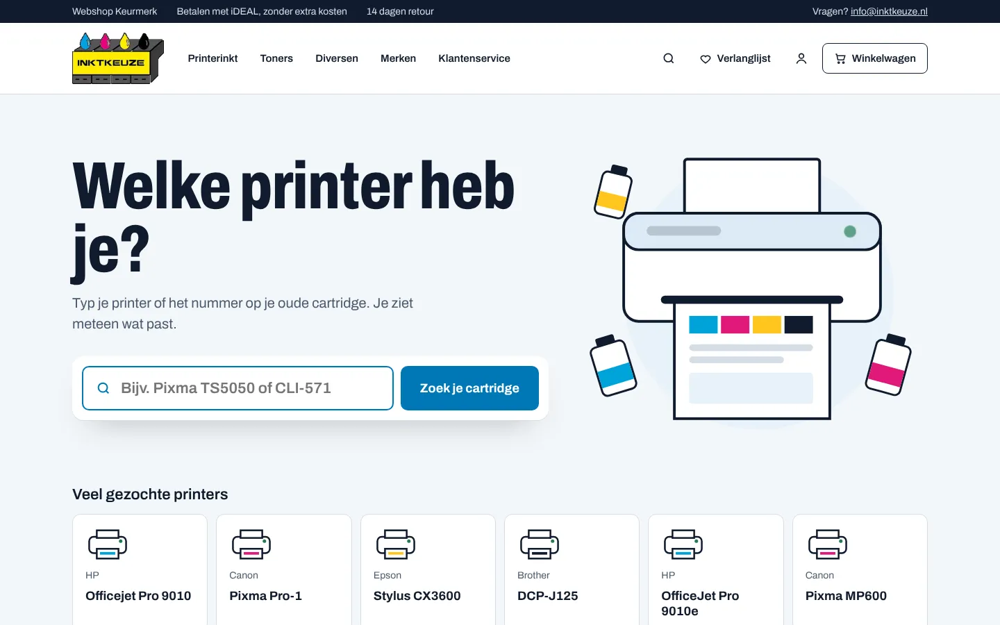
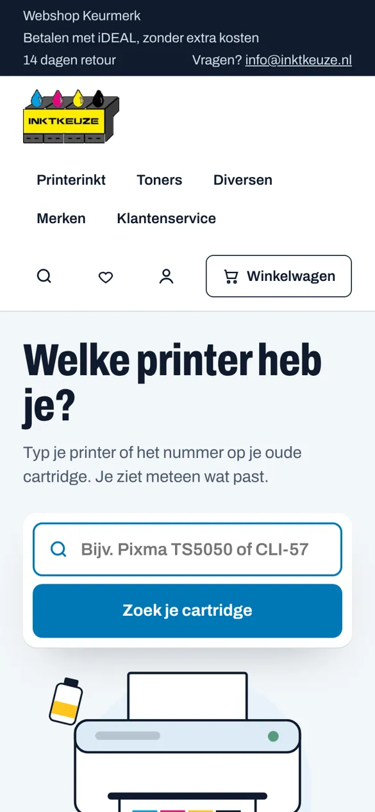

PRINTERINKT · WEBSHOP
Inktkeuze
Webshop voor printerinkt en toners. Bezoekers typen hun printer of cartridgenummer en zien meteen wat past.
Bekijk de website

Wat ik heb gebouwd
- Webshop gebouwd in Next.js en TypeScript.
- Echte catalogus en teksten van inktkeuze.nl geïmporteerd.
- Hero met animatie en een aparte mobiele layout.
- Klantaccounts: registreren, inloggen en Mijn account met bestellingen, adressen en gegevens.
- Afrekenen met Mollie, inclusief webhook en verwerking van bestellingen.
- Facturen met doorlopend nummer, te printen of als PDF.
- Verlanglijst en een beheeromgeving met verzendstatus.
Techniek
Next.jsTypeScriptReactNeon (PostgreSQL)Vercel BlobMollieMotionVercel
© 2026 Serhatcan Yildirim · serhatcanyildirim.nl